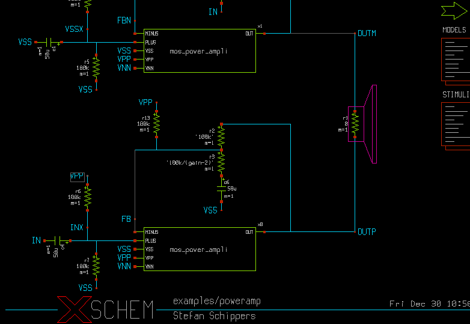
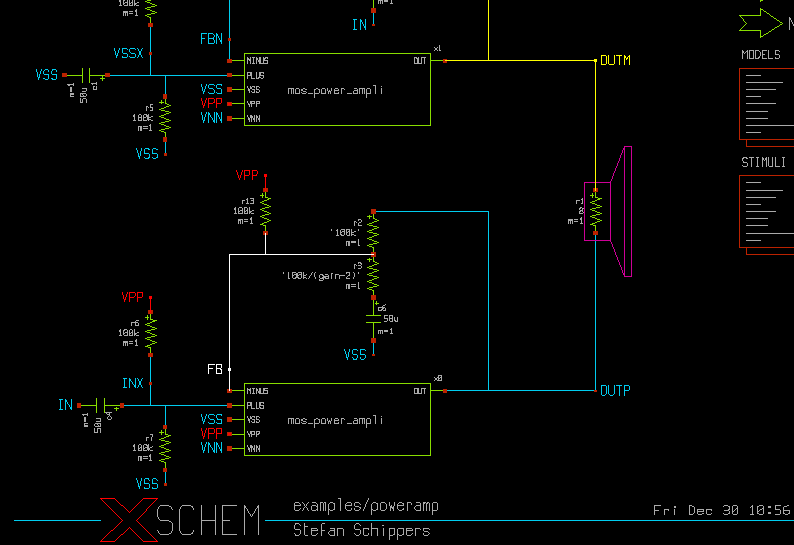
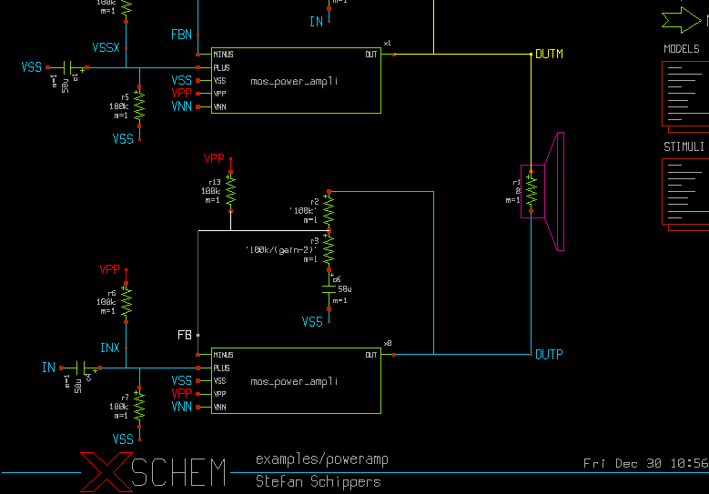
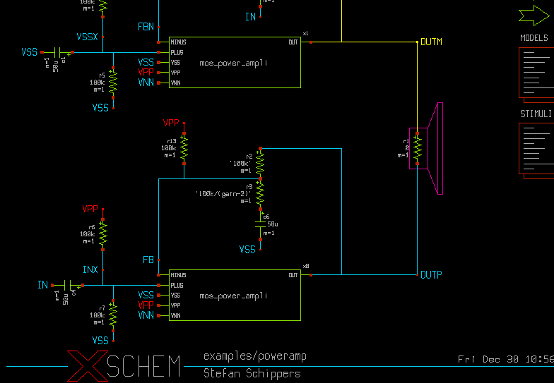
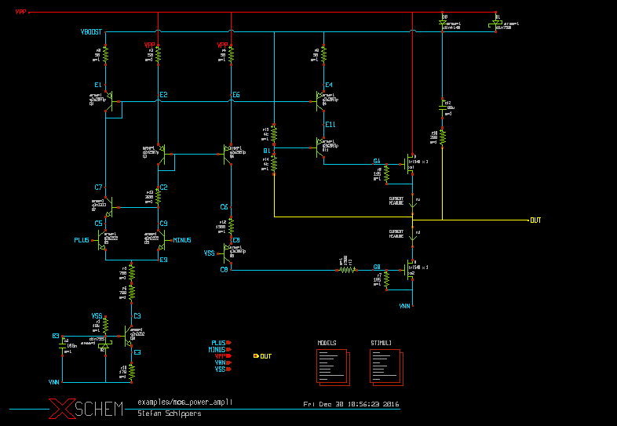
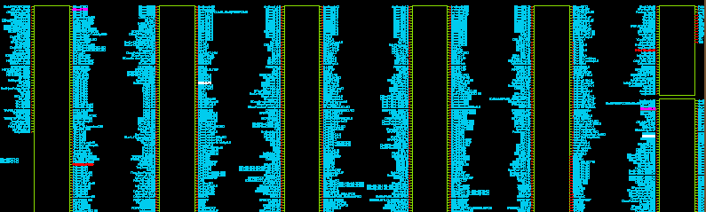
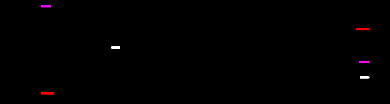

NET PROBES
XSCHEM has the ability to hilight a net and propagate the highlight color to all nets or instance pins attached to the net. It has the ability to follow this net through the hierarchy. This is very useful in large designs as it makes it easy to see where a net is driven and were the net goes (fan-out). Highlighting a net is straightforward, click a net and press the 'k' key. If more nets are selected all nets will be colored with different colors. <Shift>K clears all highlight nets, <Ctrl>k clears selected nets.
Select some nets...
...press the 'k' key...
...all nets are highlighted, select the white net...
..press the <Ctrl>k key and white net is un-highlighted...
if you descend into component instance x1 (mos_power_ampli) ('e' key) you will see the highlight nets propagated into the child component.
A very useful function is the 'View only probes' mode, ('5' key) that hides everything but the highlight probes. This is useful in very big VLSI designs to quickly locate start and end point of nets. Pressing again the '5' key restores the normal view.
 